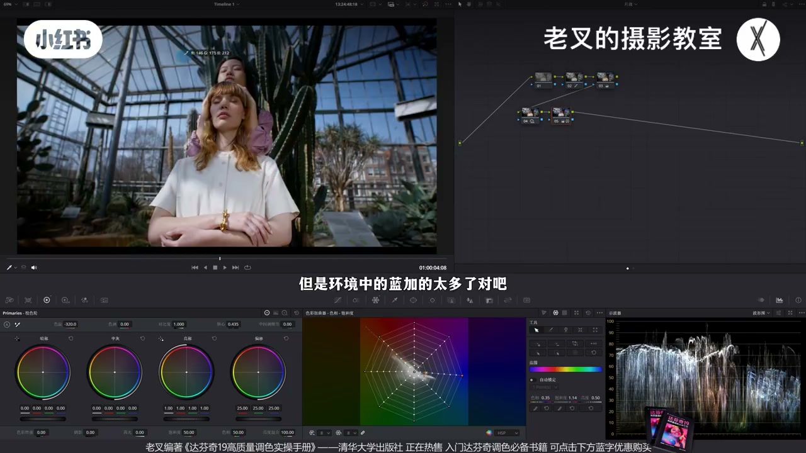
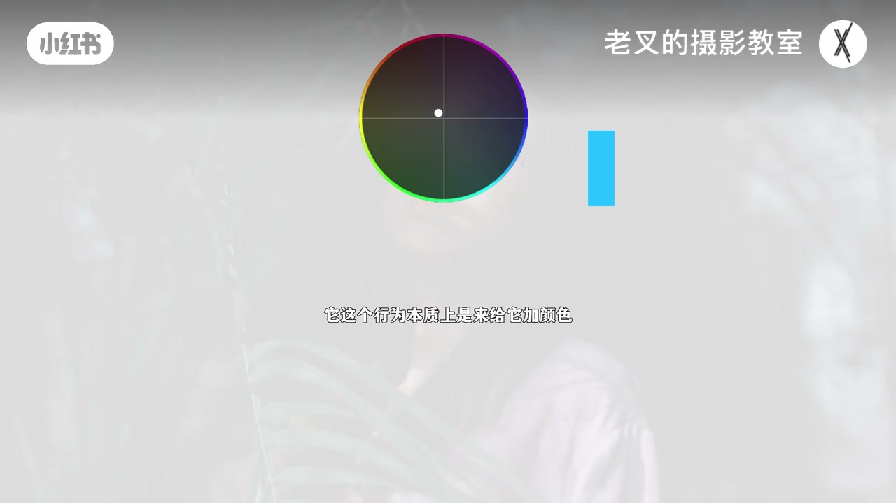
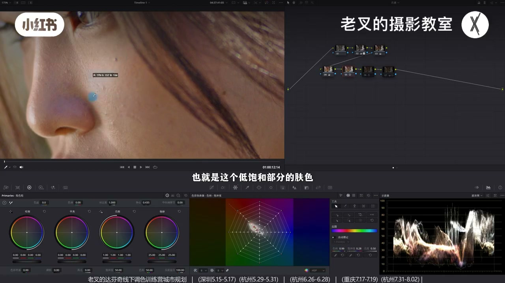
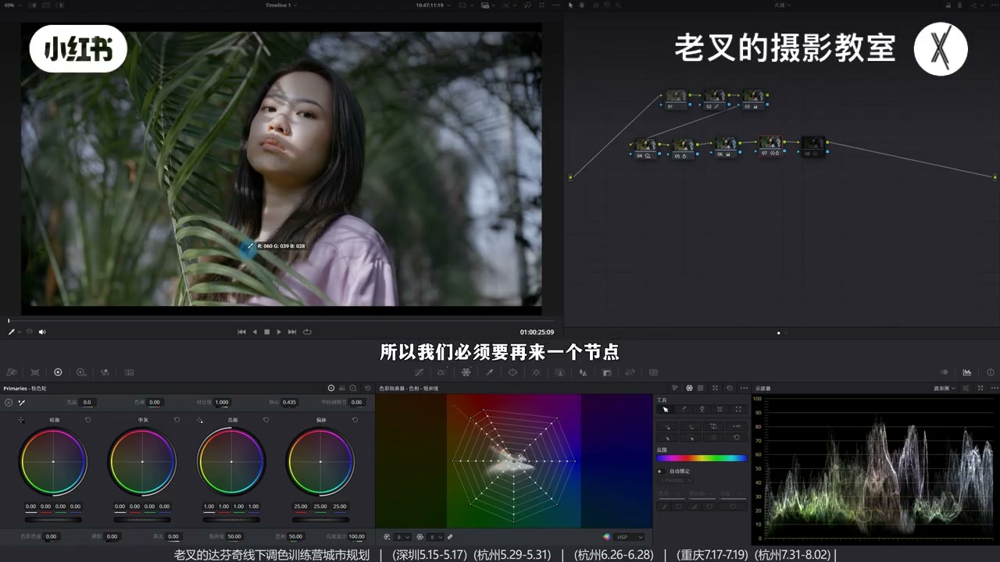
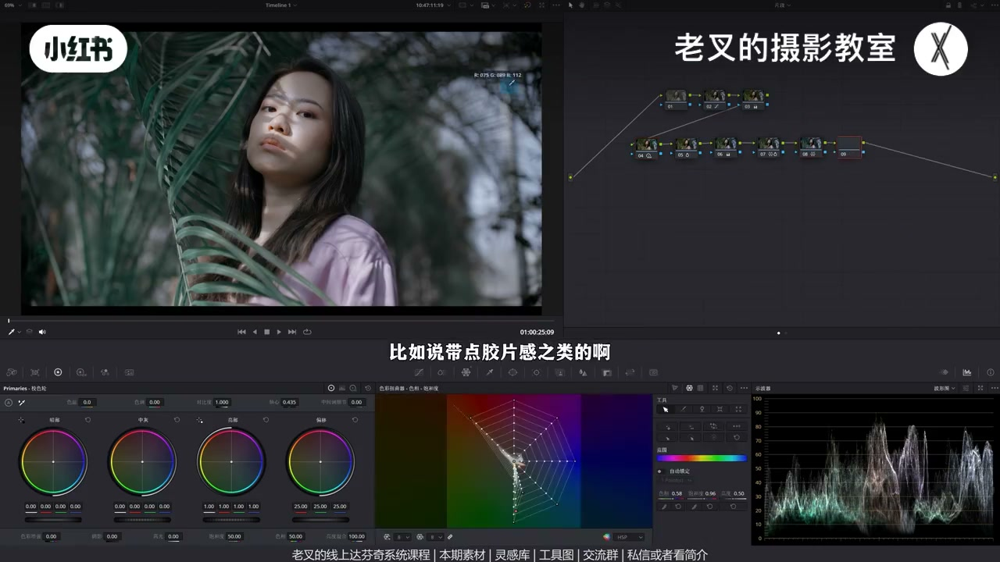

内容要点
阳光造成的肤黄未必是白平衡错，可沿用「加冷再优化」。快路径：强化反差→降色温加冷（蓝可略转青）→切片降蓝青密度回调，蜘蛛网微调肤相。原理是互补对冲：加蓝对冲黄，橙肤留红再纠，勿降色调乱出绿；勿把肤饱和抽成僵尸色。闷黄且白平衡正确时先提亮统一饱和再降密度，最后才全局加冷。环境不接纳冷调时要把暖叶改墨绿。
知识结构
反差→降色温加冷→降蓝青密度+纠肤相。
加蓝对冲黄；勿抽干饱和；慎减色调出绿。
白平衡对仍闷黄：先提亮统一饱和、降密度，再加冷。
肤冷了叶太暖→墨绿；晨阴天宜冷，暖沙滩慎用。
冷白皮是互补对冲保留血色比重，不是洗白成灰。先判断能否全局加冷；不能则先透亮。肤色改完必须看环境是否也允许冷调。
00:00-01:23快路径：反差 → 加冷 → 回调蓝青
女生肤黄：本例因阳光照身，非白平衡错，但可沿白平衡修正思路。先节点强化明暗，再一级色温左移加冷，同节点蓝略转青去紫感——肤黄减轻。
环境蓝过多则切片降蓝青密度回调；肤偏红可用蜘蛛网略拉黄。无需画遮罩，白人/亚洲示例都快。

01:23-03:19核心：互补对冲，不是抽干肤色
把肤饱和抽光会成僵尸色。冷白皮是用互补色对冲：加青会先靠近白；加蓝对冲的是黄，橙肤（黄+红）对冲黄后偏红，再用蜘蛛网纠相——比全局减色调加绿更安全。
降色温+减色调才是加青，但减色调易出不可控绿。保留原色比重，只对冲过黄。

03:19-06:17白平衡对仍黄：先透亮再加冷
领白 RGB 接近说明全局白平衡正确；强行加冷会让受光面先入蓝、背光仍暖，难控。根因是不够透亮：抬阴影降高光先亮起来；蜘蛛网抬低饱和受光面饱和、同时降高饱和，统一脸部饱和。
再降肤密度（提亮感）并略降肤饱和，护嘴唇。然后才全局降色温；蜘蛛网处理偏紫区。对比还原，暗沉黄可变舒服冷白。

06:17-08:56环境也要冷；适用边界
另一镜：反差+降密度+加冷+去蓝后肤好了，但黄绿叶太暖导致不融合——蜘蛛网把黄/黄绿往墨绿（绿加蓝）并控饱和。
冷白皮不太挑素材，前提是环境接受冷调：晨/阴天合适；西洋暖沙滩不合，蓝调时刻或需护沙。可选曲线低区高区做胶片压缩，但须建立在前述流程上。


完整转录（430段）
以下文本由 Whisper medium 模型自动转录，可能存在少量识别误差，已尽可能修正。
拍了女生之后皮肤发现它发黄怎么办
我们看到这个画面
发黄其实有很多个原因
这个素材的原因
是因为阳光照在人物身上了
它并不是白平衡的错误
但是我们可以沿用白平衡修正
再优化的方式来操作
我们可以再来个节点
给它稍微强化一下反差
这个反差就不多说了
大概这样一做就好
让它的明暗关系更强一些
然后再来一个节点
给画面整体加冷
我做了一个反差
这个反差就不够了
大概这样一做就好
让它的明暗关系更强一些
然后再来一个节点
给画面整体加冷
我这里选择的是
一级校色轮中的色温滑块
给它往左边移动
也就是给它降低点色温
让它加一点冷
加完冷冷之后
我们可以同步在同一个节点中
把蓝色往青色方向偏
因为这里的蓝有一点发紫
对吧
让它往青色方向稍微偏一偏
那这样做了之后
我们就能让画面
整体呈现冷掉的结果
特别是皮肤
它也没有原本那么黄了
但是环境中的蓝加的太多了
对吧
我们可以再来一个节点
你用任何的工具都行
我这里选择的是切片工具
把蓝色和青色的薄度给它降低了
也就是把蓝色给它回调
大概到这个程度
青色回来一点吧
如果你觉得皮肤此时有点偏红
我们可以用蜘蛛网
给它往黄色方向稍微拉一点
这问题都不大
好 那这样一做
我们就让这个肤色
从这样变成了这样
我们放大看
肤色原本是非常黄的
调完之后
它就变成了一个
不错的一个效果
包括后面的亚洲人
都是一样的
而且这个方式非常非常快
它并不需要你画遮罩
或者是做皮肤的选区
之类之类的
很简单
当然我们换一个素材
也是一样的
这个是还原后的结果
同样我们给它在
第二排第一个节点
增加点明暗反差
同样用HDR色轮
让它这个光影能够更加明显
然后再在5号节点
给它降一点色温
让它偏冷一点
偏冷了之后
再把它蓝色和青色的薄度
给它往下一降
同时也稍微给它微调一下皮肤
因为原本有点偏红
这样一调
你会发现
肤色也变得非常舒服了
对吧
最重要的就是
肤色原本的颜色还是保留的
我举个例子
它并不是说像把
这个皮肤的薄度
全部给它往下降了
降成这样
它不是这个意思
因为你这样降的话
它就是完全的僵尸色了
而我们那个行为
其实是保留
它原本的一个颜色比重的
它只不过拿它的护股色去对冲
那护股色对冲着
到底要怎么理解呢
我们以色轮来举例
我们的肤色大概是在这个位置
如果说我们给这个颜色
增加它的护股色
也就是青色
那么这个颜色
这个颜色会先靠近白色
而不是变成青色
靠近白色
它这个行为
本质上是来给它加颜色
而不是去颜色
如果护股色对冲的力度
和你原色的一个比重是一样的
那它就会变成白色
对吧
这就是我们冷白皮
这个核心原理
只有突破了中间点
它才会逐渐出现青色
但是你还记得吗
我们的操作并不是加青色
而是加蓝色
对吧
我这里降的是色温
我们知道
如果你想要给画面全去加青色
那应该是降色温的
同时再降一点色调
因为降色调是加绿吗
绿加蓝才是青色
但是要注意减少色调这个行为
它容易让画面产生破坏
也就是产生不可控的绿色
它不一定好看
主要它不安全
所以我们只要加蓝就行了
可是加蓝它对冲的是谁
是黄色
皮肤是橙色
而橙色是由黄色加红色得到的
所以我们把黄色对冲完了之后
画面中的皮肤就会留下红色
这也是为什么皮肤会偏红的原因
那么我们就可以
在后面再来个节点
用蜘蛛网给它稍微调整一下
皮肤的色相
这样更直观
也更简单
不至于说我们给画面整体调了绿之后
其他的颜色产生的破坏不可控
有些朋友会说
你这两个粒子都是白人
如果亚洲人
我们可以看这个素材的变化
这个是我们还原后的结果
我们可以把它从这样变成这样
效果其实也非常好的对不对
这几个素材我都传到了
现场分享平台
私信或者跟我姐姐来找我就行了
这是免费领取的
还有达文集
线上系统课程和
线下调色训练营
这个素材要怎么做
这个思路稍微有一点点区别
因为它比较麻烦
我们可以看到
这是还原后的结果
皮肤是很黄的
但是我们能不能说
这个素材白平衡不正确
其实是不能的对吧
我们仔细看画面中的
这个白色受光面
就是它的这个领子
它的2GB三值非常接近
几乎一致
也就是说
它全局的白平衡是正确的
如果在这个基础上
给它强行加楞的话
它会怎么样
它会出现皮肤的受光面
提前进入蓝色区域
但是其他的背光面
或者是保护的比较高的区域
它依旧保留暖色
这就不好控了对吧
很麻烦而且不好看
那它的皮肤
为啥会看得这么黄呢
其实它的核心原因
是不够透亮
所以我们给它先提亮
我在第二排第一个节点中
我这里选择的是提高了
一级校色轮中阴影滑块
然后同步降低了点高光滑块
让它呈现出一个亮的结果
让它皮肤先透亮对吧
再然后我利用蜘蛛网
在它脸上这个受光面
你看到受光面
也就是这个低饱和部分的肤色
让它增加饱和度
然后再把高饱和部分的颜色
也让它的脸上的饱度更加一致
这个行为我重新来一下吧
让大家看得更直观
脸上为什么它的受光面
会提前进入蓝色
是因为它的饱度太低了
我们此时看到这个蜘蛛网
它无限接近于原点对不对
那我们需要让它远离原点
也就是让它的饱度稍微提高一些
可是蜘蛛网这一改动的时候
是其它的高饱和部分也会受到影响
所以呢我们把低饱和往上提的同时
要把高饱和部分的饱和度
给它往下一降
那这样呢
我们可以力度稍微再大一点
那这样就能够保证
这些高饱和部分的颜色
几乎不受到影响
但是这个低饱和部分的颜色
它就往上走了对吧
因为它原本还是在暖色嘛
这样我们就能让皮肤的颜色
更加一致
还没结束
我觉得皮肤此时还不是特别透亮
我们还可以再来个节点
当然你在同一个节点也行啊
用色轮六相切片工具
降低皮肤的密度
我们之前讲过这个点非常多次啊
因为降低密度
会让你的对应颜色
增加它的明目的同时
我们也可以再多降一点
它的皮肤的饱和度
红色也可以微调一下
因为我们看到这个地方
它的鼻头这里有一点点发紫啊
所以我们把皮肤的密度
也给它稍微一降
然后把皮肤的饱和度
也稍微给它降一点下来
注意它的嘴唇的颜色不要丢失
好 大概是这样的一个结果
我们看到皮肤已经不错了
对吧
我们与还原后的画面去对比
效果挺好的
这时候我们就可以
再给它来一个节点
用全局降低色温的方式
给它去做优化了
对吧
你这样一降的话
它的整体的颜色
就能够一起往蓝色方向曲片
效果是不错的
但是我们要注意
但是我们要注意
我这里多加了一个蜘蛛网的行为
为啥要做这个呢
一方面是为了整体皮肤不要发红
其实特别像这个区域
它有点偏紫
它不是红了 对吧
我们可以让它把蜘蛛网
往左边移动一些
然后这个紫色
也往左边移动一些
让它这里的颜色
能够给它单独处理了
那这样呢
我们就让整体的肤色从
这样的一个偏黄的结果
特别暗淡
暗沉的一个结果
变成这样的一个效果
还不错 对吧
可是这样的一个思路
还有一个情况
不是特别适用
那比如说这个素材
这个素材呢
还原后的结果
其实你看
你说它有问题吗
没有很大的问题
可是就是不舒服
不好看
皮肤也有点发黄
那怎么做呢
首先我同样的是
在第二排第一个节点
给它强化一下光影
让它脸上这个光
更加强 更有质感
然后呢
也是用切片工具
给它降低了皮肤的密度
让它皮肤稍微透亮一些
再然后呢
我们又是再来一个节点
给画面整体降了点色温
让它整体往冷掉去走
然后再来一个节点
把蓝色给去了
蓝色给去了
这个操作都是一样的
肤色也稍微往黄的方向走一点
目前你放大看皮肤
对吧
能够有不错的效果
可是你看全局
你就会觉得怪怪的
皮肤变冷白皮了之后
它跟环境不融合
那为啥会这样呢
是因为皮肤变冷白皮
等于是我们给皮肤
赋予了冷掉
可是这个环境
它并不符合冷掉的效果
这些黄绿色的叶子
都太暖了
所以我们必须要
再来一个节点
把黄绿色的叶子
让它往墨绿色走
因为墨绿色就是
绿上加点蓝
我这里呢
选择用蜘蛛网
给它往右边去偏
我们看画面的变化
一条
你会感觉
整体的效果
更符合该有的一个结果了
对不对
怎么做
这个其实非常非常简单
我们把这个
黄色往右边去走
然后降低一点它的饱和度
然后这里的黄绿色呢
也往右边走
也稍微给它
调整一下它的饱和度
大概这样一做就行了
让它能够
环境也呈现出
一定的冷掉
这个思路其实非常简单啊
而且最重要的就是
你们这个所谓的冷白皮
它不怎么挑素材
只要你环境能够接受得了
它整体走冷掉那个结果
就可以
那你比如说
在西洋的沙滩
你让它走这个冷白皮
那这个就不合适了
对吧
因为它不符合走冷掉的
一个质感
但是如果你说是在
蓝掉时刻拍的沙滩
那就有可能做得了
但是你可能得对沙子
做一定的保护 做回调
大体的情况下
特别是早晨
或者是阴天
那就非常适合了
因为整体环境
是允许它走冷掉的
所以呢
我们还是要多观察环境
单纯的肤色调整
没有什么难度啊
我们可以再看一下这个画面
从还原后的结果
变成我们调好的结果
对吧
这个效果其实非常好的
你至于后面想给它
再加点什么风格化
比如说带点胶片感之类的
那种高光和暗不是压缩的
我们可以简单的用这个
曲线右下角这个面板
有个低区跟高区
我们把低区往上一提
太多了
大概这个结果
这不就胶片感的味道
就来了吗
对吧 高区可以往下一降
稍微高光也压灰一点
这种强风的话也是可以的
但你如果说前面这些行为
都不做的话
你只是给它上这个
你就会感觉怪怪的
对吧
所以这个思路非常简单
但也同样是我认为
对于这种画面结果
非常必要的一个流程
素材大家别忘了
领取过去之后
尝试一下
讲到这里
如果你觉得对你有帮助的话
还希望多多赞联
好了 这期就到这里
886